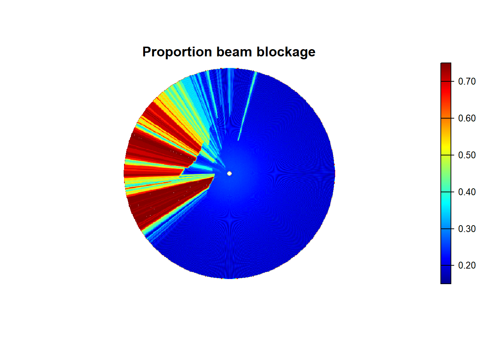

4 Part 4
4.1 Compute topographic beam blockage
We will use a previously processed complete basegrid shapefile with ground height already computed for this part. The following code will propagate a beam at the low tilt angle with standard refraction and measure how much of the beam gets blocked by topographic relief along individual rays. This is an important step in helping to mask regions within the radar domain where detection and accurate measurement of animals in the air is impossible or highly uncertain. Note that we just read in the dbf file (attribute table) of the shapefile to modify it.
## read in basegrid with range, azimuth, and ground heights rounded to nearest 10 meter
basegrid <-read.dbf(paste0(OUT,'/',site,'_100km_super_grid_DEM.dbf'))
## pass the beam_block function over the basegrid
block<-beam_block(data=basegrid, theta=theta)
basegrid<-merge(basegrid,block,by=c("range","azimuth"))
## make things look pretty
basegrid<-basegrid[order(basegrid$id),]
col_id<-grep("id",names(basegrid))
## reorder columns so id is first column name
basegrid<-basegrid[, c(col_id, (1:ncol(basegrid))[-col_id])]
basegrid$id<-as.integer(basegrid$id)
write.dbf(basegrid, paste0(OUT,'/',site,"_100km_super_grid_DEM.dbf"))The map of topographic beam blockage should look like this…
## Warning: [rast] unknown extent
Open the basegrid up in QGIS to display the beam blockage (variable “pblock”) following the steps outlined before to display the ground height.